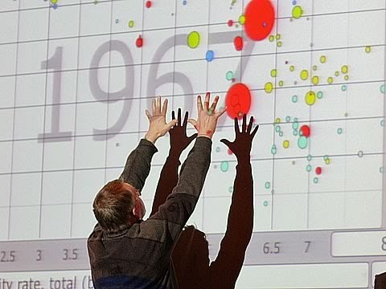
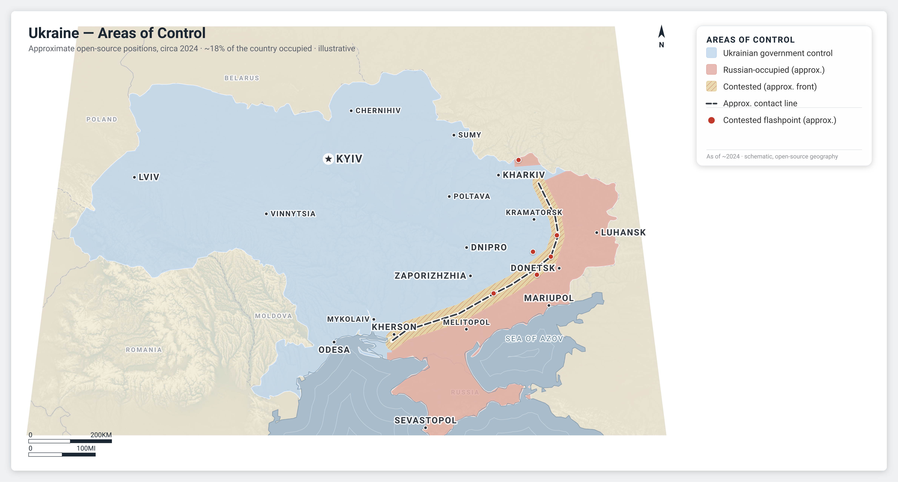
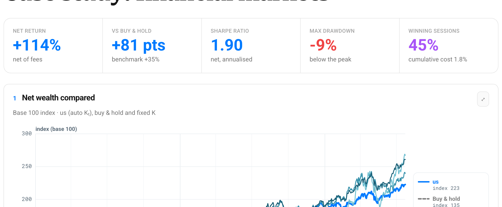

sprezzature · case studies
Case studies
Three advanced examples, empowered by our Ralph Eyeball Loop.

Animation
Tribute to Hans Rosling
The famous income-versus-lifespan bubble chart, animated across the decades, with a play button and hover, the way he showed the world getting better.
Open the tribute →

Cartography
Situation & thematic maps
Publication-grade Equal-Earth maps: layered situation maps with borders, named rivers and labels, and choropleths on a curated, colour-blind-safe palette.
See the maps →

Dashboard
Financial markets
A systematic portfolio that resizes itself, told in ten interactive SVG panels. Hover for a trader's figures, colour-blind-safe throughout, with a favourable and an adverse draw.
Open the dashboard →